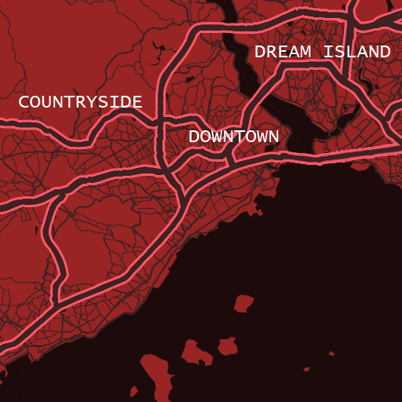

HashPunks is a collection of characters generated by a neural network.
Technical Details
A tiny DCGAN model (64x64, 14mb) using to generate a unique face directly in your browser through JavaScript.
Each nft contain random ID that linked to a point in latient space.
After main image generated, GUI loading and an other images generating by moving in latient vector space. You need to wait 200 generations, and then can see animation, and control your morphing by mouse or touchpad.
Ready for Evolution
Collection container can be updated and version on NFT will be placed on a project page
(Same unique hash can used in different HTML environment). New features can be like a prerendered HD faces, new devices etc.
For new feautures reserved some variables.
[
Homepage]
[
Discord]
[
[Twitter]]
HashCity is a Metavers!

Each character contain a random location, that will be placed to map.